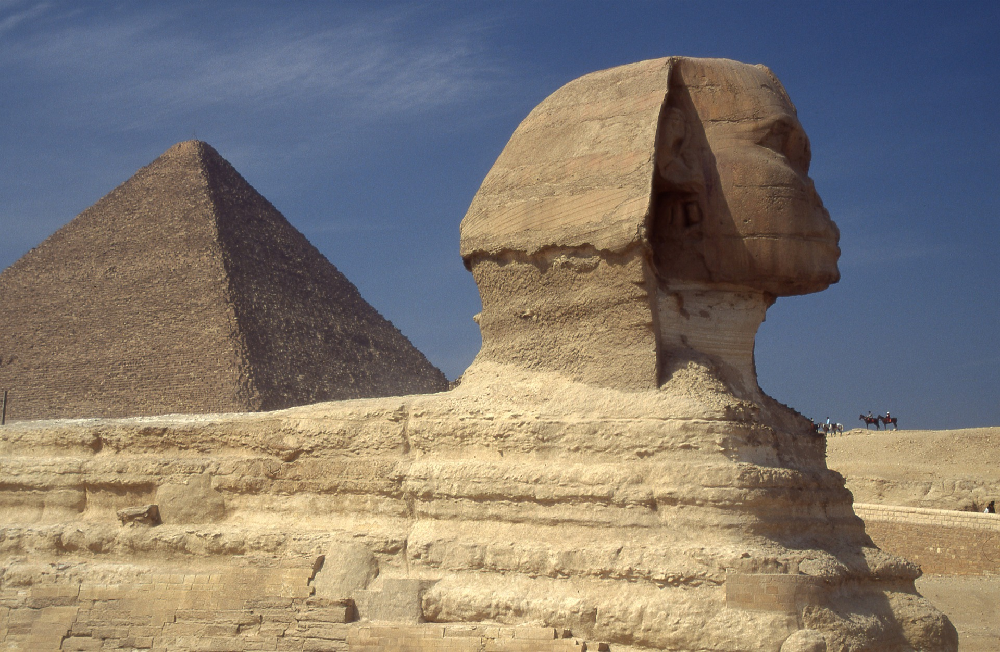
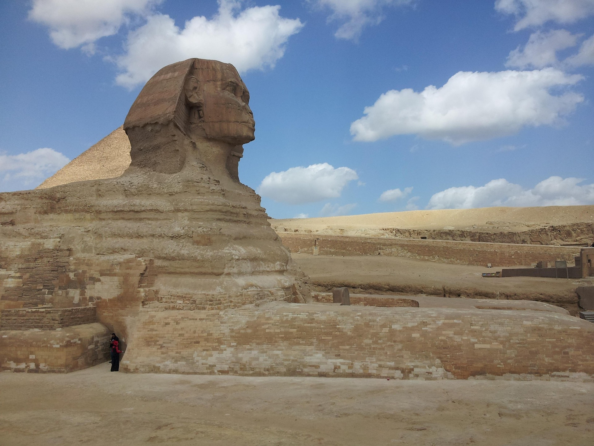
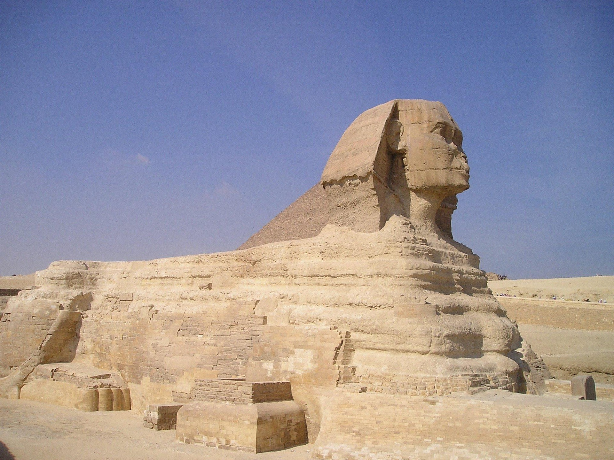
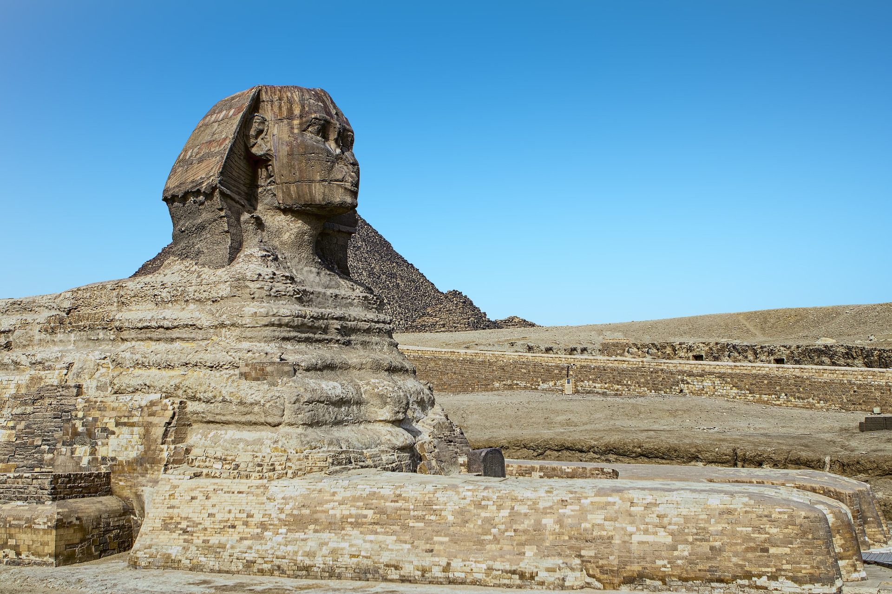

يُعد معبد فيلة من أهم وأجمل المعابد الأثرية في مصر، ويقع في محافظة أسوان على جزيرة في نهر النيل، مما يمنحه موقعًا مميزًا وسط طبيعة ساحرة. وقد شُيّد المعبد خلال العصر البطلمي، وكان مخصصًا لعبادة الإلهة إيزيس، التي كانت تُعد من أهم الآلهة في الديانة المصرية القديمة. يتميز المعبد بتصميمه المعماري الفريد، حيث يحتوي على أعمدة ضخمة مزينة بنقوش وزخارف دقيقة تحكي العديد من الأساطير الدينية والقصص التاريخية. كما يضم المعبد عددًا من القاعات والفناءات الواسعة التي تعكس عظمة الفن المعماري في ذلك الوقت. وقد تعرض معبد فيلة لخطر الغرق بعد بناء السد العالي، نتيجة لارتفاع منسوب مياه نهر النيل، مما هدد باندثاره. لذلك تم تنفيذ مشروع دولي ضخم تحت إشراف منظمة UNESCO لإنقاذه، حيث تم تفكيكه ونقله قطعةً قطعة إلى جزيرة أجيليكا القريبة، مع الحفاظ على شكله وتصميمه الأصلي. ويُعد هذا المشروع من أعظم إنجازات الحفاظ على التراث الإنساني. واليوم يُعتبر معبد فيلة من أبرز المعالم السياحية في مصر، حيث يقصده الزوار من مختلف أنحاء العالم للاستمتاع بجماله المعماري وموقعه الخلاب، بالإضافة إلى حضور عروض الصوت والضوء التي تُقام فيه وتروي تاريخه بطريقة شيقة وجذابة. ويظل المعبد شاهدًا حيًا على عظمة الحضارة المصرية القديمة وإبداعها في الفن والهندسة.


